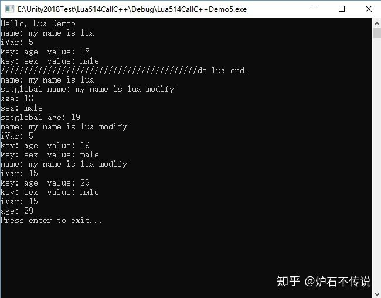
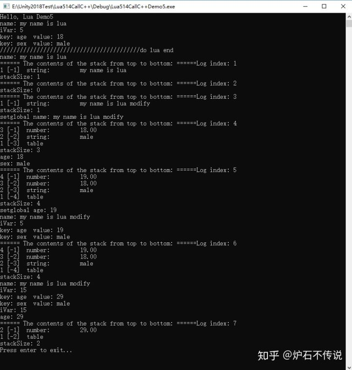

Home
上一篇文章讲了C++如何获得Lua中的变量和Table中的值，这篇文章主要讲如何修改Lua中的变量的值和Table中的变量的值，并把修改后的值打印出来。
一、直接上代码：
1、在Test.lua文件内添加如下代码：
print "Hello, Lua Demo5"
name="my name is lua"
iVar = 5
nameTable={sex = "male", age=18}
function PrintLuaLog()
print("name: " ..name)
print("iVar: " ..iVar)
for key, value in pairs(nameTable) do
print("key: "..key .. " value: ".. value)
end
end
function AddIncrease()
iVar = iVar + 10
nameTable.age = nameTable.age + 10
end
PrintLuaLog()
print("//////////////////////////////////////////do lua end")
2、在LuaTest.cpp文件内添加如下代码：
int main(int argc, char *argv[])
{
L = lua_open();
luaL_openlibs(L);
luaL_dofile(L, "Test.lua");
lua_getglobal(L, "name");
const char* strName = lua_tostring(L, -1);
printf("name: %s\n", strName);
StackDump(L, 1);
//code1
lua_pop(L, 1);
//code2
lua_pushstring(L, "my name is lua modify ");
lua_setfield(L, LUA_GLOBALSINDEX, "name");
StackDump(L, 2);
//code3
lua_getglobal(L, "name");
StackDump(L, 3);
printf("setglobal name: %s\n", lua_tostring(L, -1));
//code4
lua_settop(L, 0);
//code5
lua_getglobal(L, "nameTable");
//code6
//lua_pushstring(L, "sex");
//lua_gettable(L, -2);
//lua_pushstring(L, "age");
//lua_gettable(L, -3);
//code7
lua_getfield(L, -1, "sex");
lua_getfield(L, -2, "age");
StackDump(L, 4);
printf("age: %d\n", lua_tointeger(L, -1));
printf("sex: %s\n", lua_tostring(L, -2));
//code8
//lua_pushstring(L, "age");
//lua_pushnumber(L, 19);
//lua_settable(L, 1);
//code9
lua_pushnumber(L, 19);
lua_setfield(L, 1, "age");
//code10
//lua_pushstring(L, "age");
//lua_gettable(L, 1);
code11
lua_getfield(L, 1, "age");
StackDump(L, 5);
printf("setglobal age: %d\n", (int)lua_tointeger(L, -1));
//code12
lua_getglobal(L, "PrintLuaLog");
lua_pcall(L, 0, 0, 0);
StackDump(L, 6);
//code13
lua_getglobal(L, "AddIncrease");
lua_pcall(L, 0, 0, 0);
//code14
lua_getglobal(L, "PrintLuaLog");
lua_pcall(L, 0, 0, 0);
//code15
lua_settop(L, 0);
lua_getglobal(L, "iVar");
printf("iVar: %d\n", lua_tointeger(L, -1));
lua_pop(L, 1);
//code16
lua_getglobal(L, "nameTable");
lua_getfield(L, -1, "age");
printf("age: %d\n", lua_tointeger(L, -1));
StackDump(L, 7);
lua_close(L);
printf("Press enter to exit...");
getchar();
return 0;
}
二、代码分析，曾经讲过的函数这里就不做分析了，不明白的，可以去看前面的文章。
code1、执行lua_pop，把上面为了打印name数据而压入栈的数据弹出栈，保持栈是空的。
code2、用"my name is lua modify "的值来替换掉原来lua中name字段的值。修改规则，先压入栈内一个要修改的值value，然后调用lua_setfield，通过全局索引和key字段来进行修改要修改的key字段对应的值。修改之后会把刚才压入栈的值弹出栈。此时栈还是为空，参考栈的运行图Log index2
code3、打印刚才修改后的name值，确认一下是否修改成功。
code4、lua_settop(L, 0)是清空栈的操作函数，无论栈中有多少元素，全部清空。
code5、开始把lua中的nameTable压如栈中等待使用。
code6、code6和code7的执行效果一样，是两种获得lua table中数据的方式
code7、把table中的数据压如栈中，等待使用。
code8、code8和code9的执行效果都是一样，都是修改table中age字段的值。我们看修改规则：先把table中的key压入栈中，然后再压入要修改的值value，最后调用lua_settable来修改。修改执行完毕会把刚才压入栈中的两个值全部弹出栈。
code9、修改table中字段的值的规则，先把要修改的值压入栈中，然后调用lua_setfield来用栈顶的值修改掉原来table中的key对应的值。修改执行完毕，会把刚才压入栈中的值全部弹出。
code10、code10和code11的执行结果是一样的，都是从table中取出字段age的值，然后压入栈中。
code12、是执行lua中的打印函数，来验证一下lua中的值是否被掉。
code13、是执行lua中的递加方法，然后看一下执行之后，lua中的各个变量的值
codd14、再次打印递加之后的lua中变量的值
code15、通过C++调用的方式打印lua中变量iVar的值
code16、通过C++调用的方式打印lua table中的变量的值。
所有的执行情况，可以参照栈的运行图，里面有详细的数据入栈和出栈操作
三、运行结果如下图

四、程序运行时栈内的变化情况如下图：
